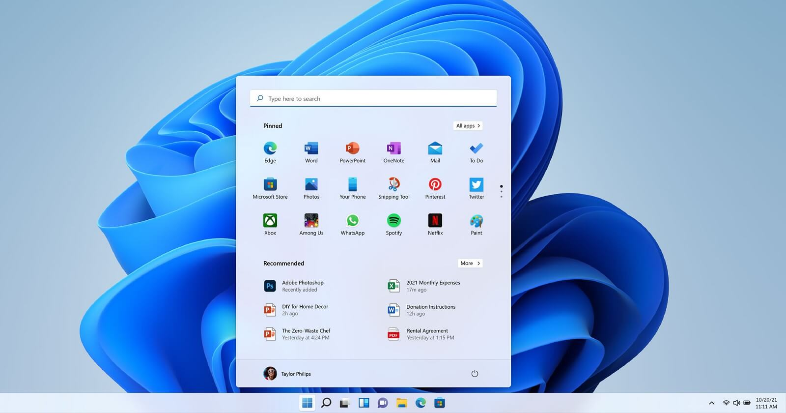

Macam-Macam OS atau Operating System pada Komputer
- Microsoft DOS (Disk Operating System)
- Microsoft Windows
- Windows 1.0 pada tahun 1983.
- Windows 2.0 pada tahun 1987.
- Windows 3.0 pada tahun 1990.
- Windows 3.1 pada tahun 1992.
- Windows 95 pada tahun 1995.
- Windows 98 pada tahun 1998.
- Windows milenium edition pada tahun 2000.
- Windows NT 3.1 yang ada di tahun 1993.
- Windows NT 3.5 yang ada di tahun 1994.
- Windows 2000 atau Windows NT 5.0 pada tahun 2000.
- Windows XP yang ada pada tahun 2001.
- Windows Vista pada tahun 2006.
- Windows 7 pada tahun 2009.
- Windows 8 yang ada di tahun 2012.
- Windows 8.1 ada pada tahun 2013.
- Windows 10 pada tahun 2015.
- Linux
- Mac OS X
- Unix
- Terdapat portabilitas.
- Multiuser, sebab ialah sistem dari operasi jaringan.
- Multitasking, kita dapat mengerjakan serta menjalankan tugas bersamaan.
- Sulit terkena virus.
- Termasuk kedalam sistem operasi gratis.
- Tampilannya kurang menarik.
- Penyimpanan memori yang cukup besar.
- Driver tidak banyak di unix.
- Beberapa hardware sulit menyediakan driver untuk unix sendiri.
- Cukup sulit serta membingungkan.
- Amiga
Macam OS yang pertama adalah Microsoft DOS (Disk Operating System). Sistem operasi ini merupakan awal dari sistem operasi pada Microsoft. Kelebihan dari sistem operasi DOS ini adalah memiliki ukuran yang kecil, penggunaan memori cukup ringan, serta sangat kompatibel dengan berbagai perangkat. Sementara itu, kekurangan sistem DOS adalah hanya berupa tulisan serta tidak ada grafiknya, karena sistem operasi ini merupakan generasi pertama.
Microsof windows merupakan salah satu macam OS yang mungkin sudah dikenal semua orang. Microsoft windows adalah sistem operasi yang dikembangkan oleh Microsoft dengan menggunakan antar muka pengguna grafis atau GUI yang membuat pengguna dapat berinteraksi dengan komputer menggunakan tampilan visual yang sangat memudahkan pengguna.
OS ini telah berevolusi dari MS-DOS, sebuah sistem operasi yang berbasis text dengan penggunaan baris perintah. Windows versi 1.0 pertama kali diperkenalkan pada 10 November 1983 tetapi baru dipasarkan di November tahun 1985. Sampai saat ini windows telah mengeluarkan berbagai macam sistem operasi dan yang terakhir adalah windows 10 yang diperkenalkan pada 29 Juli 2015. Berikut ini adalah perkembangan windows dari tahun ke tahun:
Kelebihan utama dari sistem operasi windows ialah cara menjalankan dan instalasinya mudah. Sedangkan kelemahan utamanya ialah rentan terkena virus.

Linux juga cukup sering digunakan oleh pengguna komputer, meski jumlahnya tidak sebanyak sistem operasi Windows. Linux memungkinkan penggunanya untuk melakukan modifikasi untuk meningkatkan kinerja sistemnya. Kelebihan utama dari macam OS Linux ialah bisa dimodifikasi sesuai kebutuhan, tetapi hal ini hanya bisa dilakukan oleh orang yang paham teknologi. Untuk kelemahan utamanya ialah cara instalasinya lebih susah dibanding Windows.

Mac OS adalah salah satu macam OS yang dibuat oleh Apple. Sistem operasi ini sudah terpasang pada semua komputer Macintosh (disebut Mac) baru. Banyak orang lebih menyukai tampilan sistem operasi Mac OS X daripada Windows walaupun harga komputer Apple cenderung lebih mahal. Kelebihan sistem operasi Mac OS adalah lebih stabil, tampilan antarmuka cocok untuk kebutuhan multimedia, memiliki keamanan tinggi dan tidak mudah diretas, serta aman dari virus. Sementara itu, kekurangannya adalah harga yang relatif mahal, kurang optimal untuk gaming, dan tidak open source.

Unix merupakan salah satu macam OS yang dibuat oleh sebuah perusahaan AT&T, general electric dan juga MIT pada tahun 1965 untuk DARPRA. Unix ini juga adalah sebuah sistem operasi baku yang dapat dipakai dari segala komputer dan termasuk juga untuk komputer mini.
Kelebihan sistem operasi unix:
Kekurangan sistem operasi unix:

Amiga merupakan macam OS terdahulu dan sampai sekarang masih ada yang khusus digunakan untuk laptop Amiga. Sistem operasi ini juga sudah menggunakan tampilan antar muka bagi penggunanya.
Fungsi OS atau Operating System
Berikut ini terdapat beberapa fungsi OS pada komputer, antara lain:
- Server harus mampu melakukan kontrol sarana sumber daya jaringan agar dapat digunakan secara bersama. Seperti menjaga sumber daya dan direktori jaringan, pengelolaan permintaan akses remote ke sistem file dan database, manajemen antrian permintaan (query) bagi pengguna jarak jauh untuk perangkat periferal.
- Melayani permintaan klien untuk mengakses aplikasi dan sumber daya jaringan. Sistem operasi ini mengarahkan permintaan untuk sumber daya jaringan dari aplikasi remote dan pengguna.
- Sarana komunikasi artinya melayani pertukaran pesan pada jaringan. Pada sisi server menangani dan menyediakan routing, buffering pesan, mengirim pesan melalui jaringan, dan keandalan transmisi, dan lain-lain.
- Networking basics yang dapat membedakan beberapa bagian pada unit-unit komputer dalam jaringan.
- Kontrol sumber daya lokal komputer, meliputi fungsi proses dan distribusi antar memori, proses perencanaan dan penjadwalan, prosesor manajemen dalam mesin multiprosesor, kontrol peripheral, dan proses fungsi manajemen sumber daya lainnya dari OS lokal.